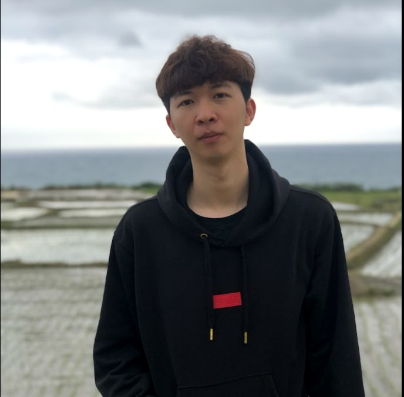
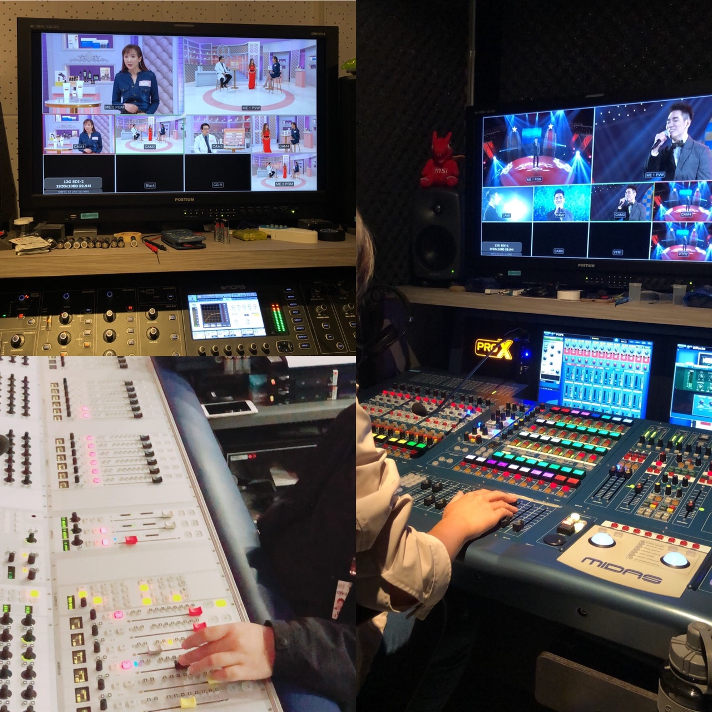
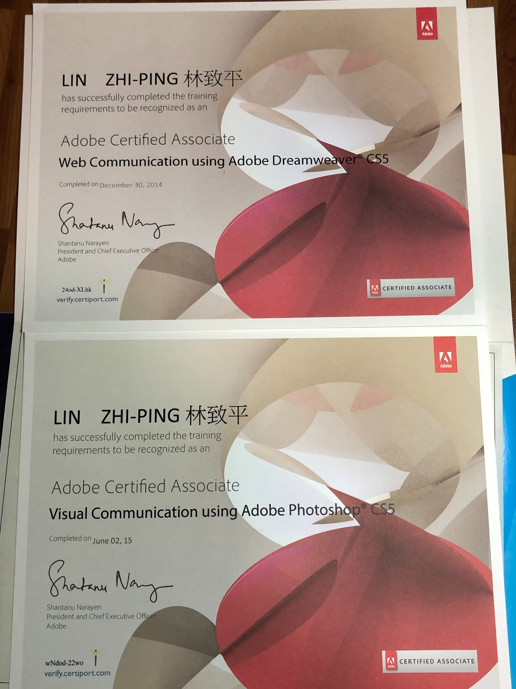
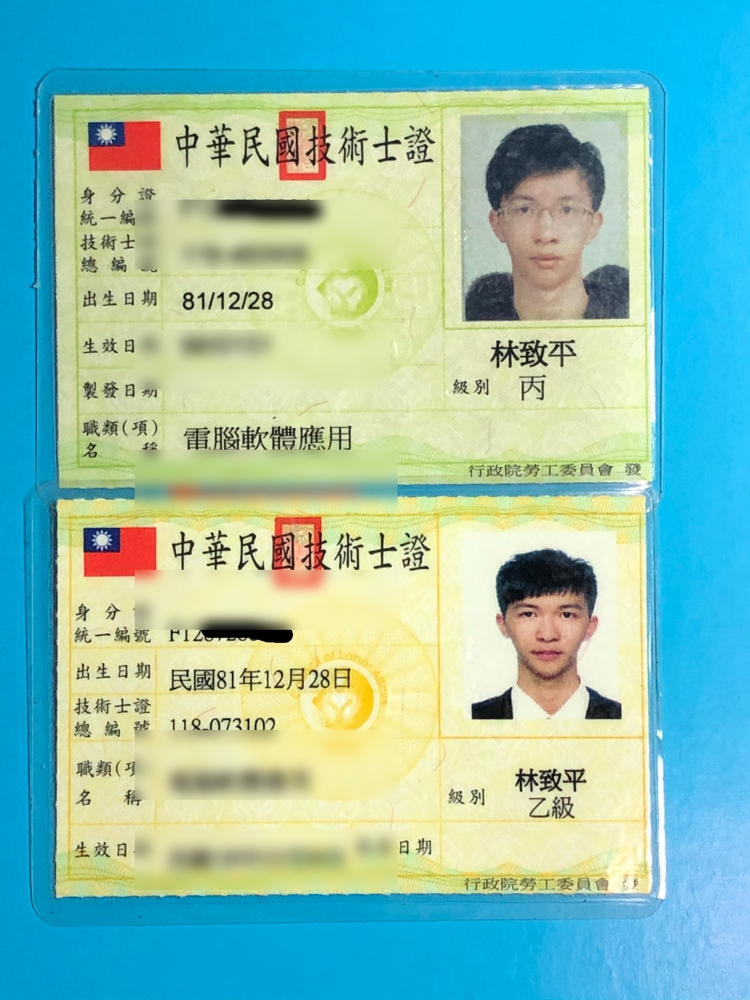

AI Music
05 / 09
AI APPLICATION · MUSIC PRODUCTION
從乾淨 Demo，到新的聲音版本。
以原始、乾淨的音樂 Demo 作為起點，利用 AI 進行修改與聲音元素添加，嘗試延伸編曲、氛圍與音樂表現。
這裡展示的是 AI 輔助音樂製作的實際案例。AI 作為創作工具，最後仍由人進行方向判斷、選擇與品質把關。
AI MUSICDEMO EDITARRANGEMENTHUMAN CURATION

電視節目錄影、成音工作與現場音訊執行。
PA 音響相關工程、電視節目錄製、網路直播。曾參與《命運好好玩》、《新聞哇哇哇》、《挑戰吧大神》等節目。
PA 音響相關工程、新聞節目錄製與直播新聞節目。

長期在電視節目與直播環境中工作，熟悉節目錄影流程、PA 基本系統與現場音訊處理。新聞 Live 節目需要即時配合 PD／AD Cue；預錄節目則更重視事前準備與細節控制。
PA 基本系統、電視節目成音、直播音訊、現場音訊流程。
Premiere Pro、CapCut、PowerDirector、影音製作、短影音、字幕與基礎特效。
Adobe Photoshop、Illustrator、圖片修圖、平面設計與簡易視覺製作。
Word、Excel、PowerPoint、文書處理與排版；具乙級電腦軟體應用技術士。
文案、圖像、音樂生成與內容規劃。AI 是輔助工具，保留人的判斷與品質把關。
以原始、乾淨的音樂 Demo 作為起點，利用 AI 進行修改與聲音元素添加，嘗試延伸編曲、氛圍與音樂表現。
這裡展示的是 AI 輔助音樂製作的實際案例。AI 作為創作工具，最後仍由人進行方向判斷、選擇與品質把關。
資訊傳播學系｜四技畢業
系學會副會長、畢籌會長；參與迎新、聖誕活動、畢業展，並曾組樂團擔任貝斯手。
資料處理科｜高職畢業
簡報表格、文書處理與電腦應用基礎。

Web Communication using Adobe Dreamweaver CS5
Visual Communication using Adobe Photoshop CS5

乙級／丙級｜公開展示版已遮蔽個人識別資料。
沒有在前進的時刻，即是在退步。面對新的節目、新的議題與新的工具，保持學習、檢討與調整，是我持續累積專業的方法。
目前開放新的工作與合作機會。